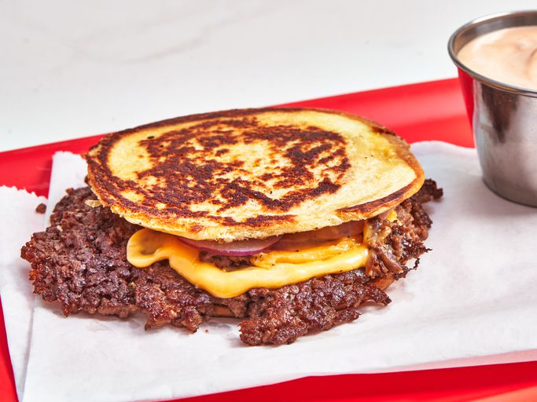

The Crustburger

This is the Crustburger, a recipe that comes from Sean Brock of Joyland
Restaurants. A very thin burger, cheese, and onion, are sandwiched in a
flattened potato bun, toasted in a skillet until golden and crusty on both
sides.
Ingredients
- 2 teaspoons softened butter
- 1 potato hamburger bun
- 2 ounces 70% lean ground beef
- salt and freshly ground black pepper to taste
- 1 very thin slice onion
-
1 slice American cheese, such as Kraft Deluxe® American cheese slices
- 1 tablespoon mayonnaise
- 2 teaspoons ketchup
- 1/2 teaspoon hot sauce, such as Crystal® hot sauce
- 1/4 teaspoon fish sauce
Directions
-
Heat a heavy skillet or griddle over medium heat. Spread butter over top
of bun and bottom of bottom bun and place in skillet. Press down firmly
with a spatula to completely flatten buns. Cook until toasted on both
sides and set aside.
-
Increase the heat under the skillet to medium-high. Place meat in a
mounded ball into the hot skillet and press firmly to flatten with a
spatula. Gently work the spatula in a circular motion to form a very
thin patty with jagged edges. Season with salt and pepper.
-
Place onion on top and cook until browned around the edges. Top with
cheese and cook until cheese melts. Scrape burger from the skillet and
place on top of the bun top. Invert the other bun so that the inside of
the bun is now the outside. Place burger back in skillet and cook about
1 minute on each side.
-
Stir mayonnaise, ketchup, hot sauce, and fish sauce together in a small
bowl. Serve sauce alongside the burger.